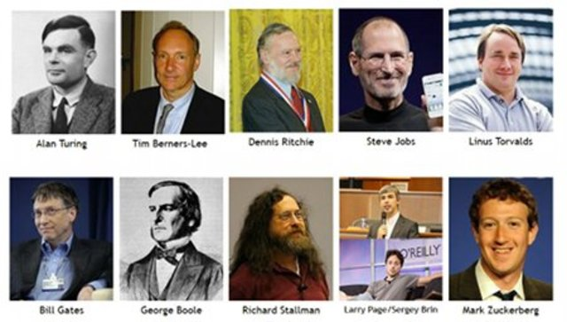

GRANDES PERSONAJES EN LA HISTORÍA DE LA INFORMÁTICA
Lista de ingenieros informáticos famosos con información biografíca sobre la vida personal, trayectoria profesional y las obras de varios ingenieros informáticos famosos de todos los tiempos.
Héroes de la Informática
Bill Gates
Steve Jobs
Tim Berners-Lee, padre de la Web
Larry Page, creador de Google
Sergey Brin, fundador de Google
Mark Zuckerberg, creador de Facebook
Jeff Bezos, fundador de Amazon
Dennis Ritchie, creador del Lenguaje C
Alan Turing, padre de la Computación
Linus Torvalds, creador de Linux
Jimmy Wales, fundador de Wikipedia
Steve Wozniak, inventor de Apple
Richard Stallman, inició Software Libre
Rasmus Lerdorf, creador de PHP
Referencia
